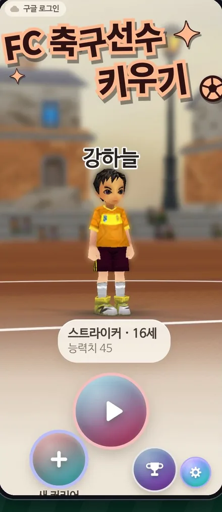

정규 리그 · 컵 LEAGUE
나라별 리그에서 승격과 강등을 겪으며 1부를 노리고, 시즌마다 단판 토너먼트 컵 대회가 열립니다.
바벨 게임소개서 · 2026년 11월
Football Rush · 3D Football Manager
작은 구단 하나를 맡아 선수를 모으고 키워 세계 무대 정상까지 올라가는 PC용 3D 축구 매니저 게임입니다. 모든 경기는 실시간 3D로 펼쳐지고, 감독은 경기를 지켜보며 작전을 바꿉니다.
경기 계산은 따로 만든 매치 엔진이 맡고, 화면에서는 22명의 선수가 3D로 뛰어다닙니다. 감독은 경기를 보면서 작전을 지시하고, 골 장면은 리플레이로 다시 봅니다.
나라별 리그에서 승격과 강등을 겪으며 1부를 노리고, 시즌마다 단판 토너먼트 컵 대회가 열립니다.
8개 구단이 한 조가 되어 일주일 동안 매일 밤 9시에 한 라운드씩, 모두 7라운드를 치릅니다.
유럽 리그 · 국가대표 · U-23 · 아시아 · 중동 등 8개 분야 45개 대회를 단계별로 정복합니다.
비슷한 순위의 구단에 도전하는 월간 순위전입니다. 참가비를 걸고, 이기면 두 배로 돌려받습니다.
부담 없이 새 전술과 선수를 시험하는 연습 경기입니다.
스팀 친구와 방을 만들어 리그와 토너먼트를 엽니다.
매일 낮 12시에 유소년 선수 한 명이 올라옵니다. 1성으로 보여도 키우면 숨은 잠재력까지 별이 오릅니다.
8살 유망주를 12살까지 직접 키워 유소년 경매에 올립니다.
다른 구단의 선수를 COIN으로 데려오고, 내 선수를 올려 팔 수도 있습니다.
「FC 축구선수 키우기」에서 키운 대표 선수가 매주 새 목록으로 올라옵니다.
스카우트 보고서와 선수 팩으로 새 선수 카드를 얻습니다.
1성부터 6성까지 있고, 합성과 강화로 더 강하게 만듭니다.
쉬움 · 보통 · 어려움 훈련으로 경험치를 모아 공격 · 수비 · 신체 · 기술 · 정신 능력치를 올립니다.
네 가지 시설을 5단계까지 지어 홈 경기 COIN · 훈련 경험치 · 컨디션 회복 같은 효과를 올립니다.
기차와 자동차가 오가는 3D 도시의 구단 사무실에서 선수와 면담하고, 팀 토크와 기자회견으로 분위기를 이끕니다.
부상과 징계가 가볍게 반영되어 선수 운용에 변화를 줍니다.
시상식과 트로피, 구단 연표, 라이벌 기록이 시즌마다 쌓입니다.
일일 미션을 하고, 정규리그 경기 결과를 맞히는 경기지원으로 COIN을 모읍니다.
바벨이 함께 만드는 안드로이드 게임 「FC 축구선수 키우기」에서 키운 선수가 풋볼러시의 이적 시장에 나옵니다. 모바일에서 한 선수를 키우는 감독과 PC에서 구단을 운영하는 감독이 같은 선수 시장에서 만납니다.
16살 무명 선수를 훈련과 경기로 키워 프로 데뷔, 국가대표, 은퇴까지 함께합니다.
FC 축구선수 키우기감독마다 키운 선수 가운데 대표 선수 한 명(4성 이하)을 올립니다. 실력 그대로 카드가 됩니다.
FC 축구선수 키우기매주 새 목록이 열리는 「월드계약선수」에서 슈퍼리그 구단들과 함께 입찰해 그 선수를 데려옵니다.
풋볼러시두 게임을 잇는 온라인 기능은 지금 시험하고 있으며, 출시 때 내용이 바뀔 수 있습니다.

FC 축구선수 키우기 · Android
풋볼러시는 바벨이 직접 만든 엔진과 편집기로 개발합니다. 경기장과 연출, 데이터와 번역까지 손으로 다듬고, 저사양 PC에서도 잘 돌아가도록 다듬는 일을 가장 중요하게 여깁니다.